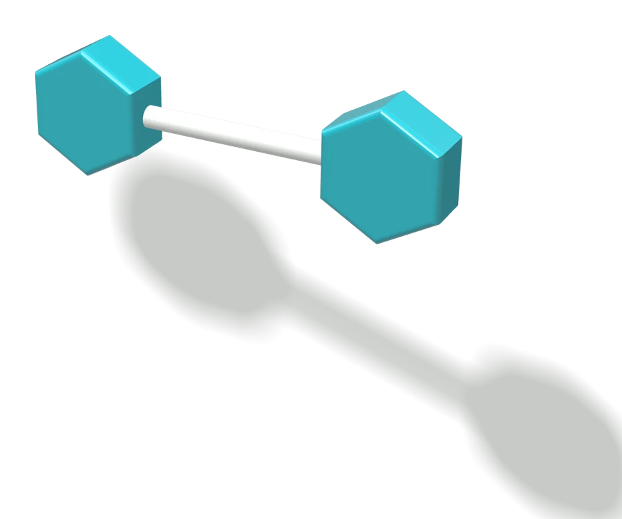

نتيجتك تخصّك، والقرار لكYour result is yours, and so is the decision
إن وصلتك نتيجة تقول إنك تحمل صفة وراثية، فأنت لست وحدك ولست مريضًا. سمات تساعدك على فهمها، وعلى الحديث مع مختص، وعلى أن تقرّر بنفسك ماذا تفعل بها.If a result tells you that you carry a genetic trait, you are not alone and you are not ill. SIMAT helps you understand it, talk to a specialist, and decide for yourself what to do with it.
ست خدمات في مكان واحدSix services in one place
نتيجتك بلغة واضحةYour result, in plain words
ما تعنيه النتيجة وما لا تعنيه، دون مصطلحات مختبر.What the result means and what it does not, without lab jargon.
جلسة استشارة بالعربيةA counselling session in Arabic
جلسة منظّمة تشرح الوراثة وتعرض كل الخيارات بالوزن نفسه. تتوقف وتعود متى شئت.A structured session that explains inheritance and lays out every option with equal weight. Pause and return whenever you like.
مستشار بشريA human counsellor
في كل شاشة زر للتحدث مع مستشار وراثي، وحدك أو مع شريكك.Every screen has a button to talk to a genetic counsellor, alone or with your partner.
دعوة الأسرة للفحصYour family, invited to check
سمات مرتبطة بشجرة الأسرة: إذا أظهرت نتيجتك حمل صفة وراثية، يُدعى أقاربك المعنيّون إلى فحص وراثي، دون أن تذكر الدعوة أنك أُجريت الفحص أو أنها مرتبطة بك بأي شكل.SIMAT is linked to the family tree: if your result shows a genetic trait, the relatives it concerns are invited for a genetic check. The invitation never says you were tested or that it is connected to you in any way.
المواعيدAppointments
حجز الفحص التأكيدي والاستشارة عبر صحتي، مع تذكيرات.Book confirmatory tests and counselling through Sehhaty, with reminders.
محاكاة في النموذجSimulated in the demoخصوصيتكYour privacy
ترى من اطّلع على ملفك، وتسحب موافقتك متى شئت.See who has opened your record, and withdraw your consent at any time.
من الدخول إلى الموعدFrom signing in to your appointment
تدخل بأمانSign in securely
عبر النفاذ الوطني الموحّد، دون كلمة مرور جديدة.Through the national single sign-on, with no new password.
نفاذ · محاكاةNafath · simulatedتقرأ نتيجتكRead your result
ملخص من سطر واحد، ثم التفاصيل لمن أراد.A one-line summary, then the detail if you want it.
تكمل الجلسةComplete the session
على مراحل وبالسرعة التي تناسبك.In stages, at your own pace.
تقرّر وتحجزDecide and book
عن نفسك وعن أسرتك، حين تكون مستعدًا.For yourself and your family, when you are ready.
أنت المتحكّم دائمًاYou stay in control
صُمّمت سمات وفق نظام حماية البيانات الشخصية في المملكة، وعلى مبدأ أن معلومتك الوراثية لك قبل أن تكون لأي أحد.SIMAT is designed under the Kingdom’s Personal Data Protection Law, on the principle that your genetic information belongs to you before anyone else.
- نتيجتك لك وحدك. لا يراها أقاربك، ولا تذكر دعواتهم اسمك أو أنك أجريت فحصًا.Your result is yours alone. Your relatives never see it, and their invitations never mention your name or that you were tested.
- الدعوة الرسمية للأقارب لا تذكر اسمك أبدًا.The official invitation to relatives never names you.
- تسحب موافقتك على أي إجراء في أي وقت.You can withdraw consent for any action at any time.
- تطلب حذف بياناتك وفق الأنظمة المعمول بها.You can ask for your data to be deleted under the applicable rules.
- ترى سجلًا بكل من اطّلع على ملفك.You can see a log of everyone who opened your record.
- تتوقف عن الجلسة أو المسار متى شئت، دون أي أثر على رعايتك.You can stop the session or the pathway whenever you like, with no effect on your care.
ما تشعر به طبيعيWhat you feel is normal
كثيرون يمرّون بهذه المشاعر بعد النتيجة. لا يلزمك أن تقرّر شيئًا اليوم.Many people go through these feelings after a result. You do not have to decide anything today.
حمل الصفة شائع، وأغلب الحاملين يعيشون حياة صحية كاملة.Carrying a trait is common, and most carriers live full, healthy lives.
لا أحد يختار جيناته. الصفة معلومة عن الأسرة، لا خطأ ارتكبه أحد.No one chooses their genes. A trait is information about a family, not anyone’s fault.
يمكنك الاستعانة بالدعوة الرسمية، أو بمسودة رسالة، أو تأجيل القرار.You can use the official invitation, a draft message, or put the decision off.
القرار لك ولشريكك وحدكما. المستشار يشرح ولا يوجّه.The decision is yours and your partner’s alone. A counsellor explains; they do not steer.